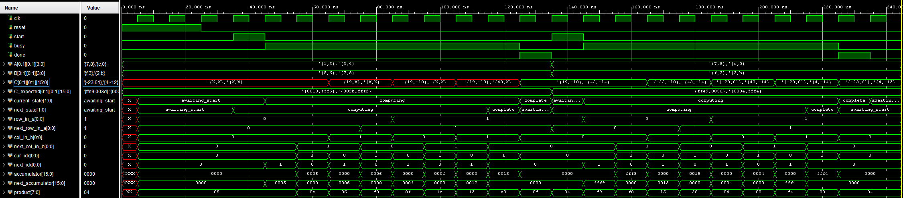
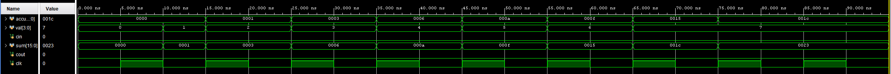

June 10, 2025
Morning: I didn't realise that setting everything up on AWS would take as long as it did. I tried all kinds of tools before going back to VSCode and Remote SSH.
I also spent some time looking at their provided examples, this seems like something I could do. Since I'm using the command line to run simulations and
stuff I'm not sure how things are going to look. I use the simulation for debugging stuff, and it seems like I can do that here too (I made like a counter
module just to try things and it worked) but through like print statements? For whatever reason the Vivado GUI doesn't work so until I can figure that out,
I'm stuck with the CLI.
Evening: I didn't realise that I have no real way to show different "blogs" from the same day until I started writing this. I'll fix that at some point.
After spending more time understanding exactly how this F2 instance stuff works, I have to say that I can see why AWS is so big
(I know it's not because of FPGAs, but I mean this more in like a wow if they can do this everything they have must be insane.), and suffering through their
support was worth it. What they've done for me is basically turn the FPGA into my GPU. They allow you to write stuff in C/C++ to be able to communicate with
the FPGA. They also allow you to write stuff in SystemVerilog which is run on the FPGA. So, for the final LLM stuff, I'll be able to accept inputs and tokenize
in C++, which is such a lifesaver because I hadn't thought about how to do it on an FPGA. The FPGA just has to do the heavy lifting (which makes so much sense).
Currently testing my Int4 matmul stuff on AWSs FPGA. Pretty cool.
June 9, 2025
I've spent some time understanding how exactly the HBM works and how I can use it. Each board has 16GB of HBM
(which is way more than I need - a 135M parameter model in INT4 will use 67.5MB of space). You need to use the AXI protocol to communicate with it.
Also, according to the README it uses AXI3 at 450MHz (which seems slow? I remember when I built a PC like 7 years ago the DDR4 ram I had was at 3200 MHz).
It has some AXI4 conversion layer which is at 250MHz. I'm not sure about why the discrepency, or what the differences are so I should spend some time reading
about this (they have modules for the conversion from AXI4 to AXI3 and for the HBM IP).
Sidenote: I'm using instance connect on EC2, and when I try to ctrl + shift + c firefox opens up the inspector. More reason to finish the multi clipboard.
June 8, 2025
FINALLY! After what has felt like an eternity of back and forth with AWS support they finally unblocked by account. I've already set up my instance,
and am figuring out how to get all teh Vivado stuff to work before I move to working on this full time. Not much progress has been made on the FPGALLM front
so far, but things should go much faster now. I've also been looking into the other couple things and I have some cool stuff to share. I also had some
other stuff that I wanted to kind of explore so I'll probably write about that too. Not much else to say, just excited to finally be able to lock in on this.
June 3, 2025
I finally got access to the AWS account that has all the Nash credits, but for some reason I can't create any new EC2 instance. I also learned that
my understanding of how working on AWS will work was wrong. I don't need to create an F2 instance to be able to develop for FPGAs, I can use any instance
with their FPGA AMI, and then the bitstream that is generated will run on an F2 instance. While waiting for a response from AWS support, I've decided to look
at ways that I can parallelize the matrix multiplication. I've decided that I'm going to push the systolic array stuff back further than I initially expected,
to get it to run first before I make any big improvements. While I wait though, I think I'm going to try to process more than 1 multiply-and-accumulate operation
in 1 clock cycle. I think I'm going to do this with like multiple accumulators that then get added together, but I'm not entirely sure. I also plan to work on
some of the smaller projects like the PC-iOS airdrop, and multi clipboard.
April 28, 2025
I have read that TPUs use systolic arrays for their operations, so I spent some time looking into what they are, how they are implemented,
and how I can use them for matrix multiplication. However, given that I haven't worked with SystemVerilog, I've implemented a simple, 2 for-loop implementation.
This is not efficient, but I figure if I start here I can work on implementing something faster later. I think the general flow I will follow is:
2 for loops => row * column in parallel => systolic array. One of the things I had a hard time with for the MNIST stuff was reading in weights from BRAM.
I imagine that is one of the most important things for me to do (figuring out how and where to read the weights from) so before making anything faster,
I should spend some time figuring out how this whole thing is going to be structured. Reading and using weights is what I should work on next.
Based on some math that I did very quickly while working on this, I should be able to support upto 512 dimension matmul without overflowing
(INT4 x INT4 => INT8 which has the range -64 to 63, 16-bit accumlator can have values from -2^15 to 2^15 - 1, so 2^15 / 64 = 512). I don't know if any matmul goes
beyond 512 dimensions for SmolLM, so will leave it at this for now. Going up to 32 bits requires changing literally 2 numbers so can make that change any time
(will require more resources etc. but I don't think I'm pushing the bounds of a $15000 board just yet). I remember that there are hazards and stuff that can go wrong
when actually running on hardware, so although most of what I am doing is focused around getting it to run in simulation, I should probably be mindful of this when measuring
performance increase, otherwise I could set the clock speed to whatever I want and say that the performance is great.

Simulation of Int4 MatMul [[1, 2], [3, 4]] x [[5, 6], [7, -8]] => [[19, -10], [43, -14]]
and [[7, -8], [-4, 0]] x [[-1, 3], [2, -5]] => [[-23, 61], [4, -12]]
April 27, 2025
I spent some time getting the Vitis suite installed. They don't have the boards used on EC2 F2 instances, so I picked whatever was closest,
and since it's been a while since I worked with SystemVerilog I decided a good place to start would probably be with the ALU.
In ECE385 we learned about different kinds of adders (ripple carry, carry lookahead, carry select) but I'm just going to use the + operation because
Vivado will apparently implement the adder that is the most efficient (although if I'm not LUT or DSP contstrained might be interestint to experiment with different kinds).
I also wrote a testbench for positive and negative numbers and it seems to work. I decided to implement an accumlator instead of an adder, because I can't think
of a place where you would not be accumulating the results for the forward pass (although as I am writing this I wonder how the position embeddings are added for
qunatized models, and those might require a regular addition operation). The next step is to implement a multiplier, and then I should have enough to check an int4 matmul.
I was reading a little bit about how the forward pass happens for quantized models, and it seems like INT8 x INT8 => INT32, then the bias is added,
and the output is requantized. This is also something I'll have to implement later.
Again, while writing this I wonder if the accumulator is the best way to go about this or not. While performing a matmul,
one would multiply a row and a column entry-wise, and then add all of them together. Imagine I perform n multiplications in parallel (based on
how many multipliers I have), to add all of them to the same register using the accumulator as it is implemented right now, it would take me n clock cycles
(or n - 1 if it just starts out with the value of the first multiplication). Instead, I could create an adder, that
adds multiple numbers together, and then that output is what is stored in the register. Perhaps implementing an adder like this would be better, which with the + operation is easy.
Also, since I will be performing the multiplication first, I would not be adding 4 bit numbers, because the output could be upto 8 bits (-8*-8 = 64).
It's probably a good idea to implement a 4 bit matmul module first, see how that goes and decide what I need. The simulations are cool to look at anyway.

Simulation of accumulator adding [1, 7] => 0x1C (21)
April 24, 2025
I first worked on FPGAs + AI in my Digital Systems class where for my final project I ran a model for handwriting recognition on the FPGA we were given.
Since MNIST is a relatively easy task, a single linear linear layer performed well enough. I also cut some other corners by converting the inputs into binary,
which meant that I didn't need to perform any floating point multiplications. FPGAs don't seem ideal for floating point operations,
so it'll be interesting to see if there are any performace gains.
From what I remember, it took 8 clock cycles for addition and 12-13 for multiplication (I'm not too worried about this because I think I can pipeline to process 12 inputs at a time).
I think I'm going to start with a very small model like SmolLM and integer quantization and play it by ear. For the MNIST
stuff I wrote a Python script to convert the weights (only 1 weight matrix) into a text file with the binary representations of the weights, and loaded that into ROM.
That worked okay for something with only 7840 parameters, but there's no way that'll work for 135M parameters. It'll also be interesting to
figure out tokenization, activation functions, different kinds of attention etc. I'll start by getting Vivado etc. set up and writing a module for INT4 multiplication.
From there I can work on matrix muliplications, and then fill in the rest. I should also check what board AWS EC2 F2 instances have, and work off those.